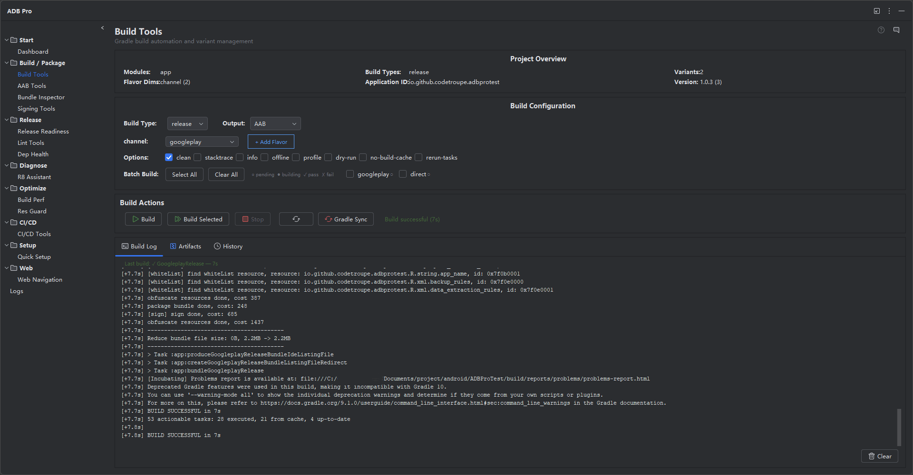

Streamline Gradle build automation with variant selection, batch builds across flavors, build history tracking, and instant artifact location.

Build Tools brings Gradle build automation into your JetBrains IDE with a visual panel that understands your Android project structure. Instead of memorizing Gradle task names and flavor combinations, you pick variants from a dropdown, trigger builds with a click, and monitor output in real time — all without opening a terminal.
The module parses your build.gradle or build.gradle.kts files to detect available build types, product flavors, and their combinations. It then presents them as selectable variants, automatically constructing the correct Gradle task names (e.g., assembleFreeRelease, bundlePaidDebug). Build results, including timestamps, durations, exit codes, and artifact paths, are recorded locally in a history table for future reference.
For release managers and teams working with multiple app variants, Build Tools supports batch builds across all flavor combinations and provides instant artifact location so you can hand off the output APK or AAB to Signing Tools or AAB Tools without leaving the panel.
Standard Android builds involve repetitive terminal work and poor visibility into what was produced:
./gradlew assembleFreeRelease, waiting, then switching back to the IDE. The constant window-switching breaks focus and slows iteration cycles.assembleFreeArmv7Release or assembleFreeArmv7aRelease wastes time and leads to typos.build/outputs/ requires navigating a deep directory tree. Multi-module projects make this even harder with several output directories to check.Run any Gradle task directly from the Build Tools panel. Common tasks like assembleDebug, assembleRelease, bundleRelease, and clean are available as one-click buttons. Custom tasks can be entered manually and are saved for reuse across sessions. Build output streams to the panel in real time, with syntax highlighting for errors and warnings, so you can monitor progress without switching to a terminal window.
ADB Pro parses your build configuration to detect all available build variants, including product flavors, build types, and ABI splits. Select the exact variant you need from a dropdown — no more typing assembleFreeRelease by hand. The selected variant persists across IDE sessions, so your last-used configuration is always ready when you reopen the project. Variant detection updates automatically when you modify your Gradle files.
Need to build all flavor combinations at once? Batch mode queues multiple variant builds and runs them sequentially through the Gradle daemon. This is ideal for release managers who need to produce APKs for free/paid variants, multiple ABIs, or white-label builds. Each build result is logged independently with success or failure status, so you can see at a glance which variants built correctly and which need attention.
Every build is recorded with its timestamp, variant name, Gradle task, duration, exit code, and output artifact path. Review past builds in a sortable table to find which variant was built last, how long it took, or whether it succeeded. History is stored locally in the IDE project settings and never leaves your machine. Use it to track build time trends or confirm what was produced before a release.
After a successful build, ADB Pro automatically locates the output APK or AAB file and shows its full path in the panel. Click to reveal the file in your system file manager, copy the path to clipboard, or pass it directly to Signing Tools or AAB Tools for the next step in your release pipeline. No more navigating build/outputs/apk/ directories manually.
Adding a new product flavor to your build configuration no longer requires hand-editing Gradle files. The Add Flavor dialog provides a guided form with fields for flavor name, dimension (choose from existing dimensions or create a new one), application ID override, signing config selection, and optional buildConfigField declarations. As you fill in the form, a live code preview shows the exact Kotlin DSL or Groovy DSL block that will be inserted. The dialog auto-detects the next sequential buildConfigField value based on existing flavors, validates naming rules, and checks for duplicate names before writing.
Fine-tune every build with a set of toggleable Gradle parameters directly in the Build Tools panel. Common options are available as checkboxes: clean before build, --stacktrace, --info, --debug, --offline, --profile, --dry-run, --no-build-cache, and --rerun-tasks. These are appended to your Gradle command automatically, so you do not need to type them in the terminal. The selected parameters persist across builds, making it easy to keep --stacktrace enabled during development or --offline when working without network access.
After a build completes, the output APK or AAB can be automatically renamed using a configurable template. Built-in template variables include ${appName}, ${versionName}, ${versionCode}, ${flavor}, ${buildType}, ${date} (yyyyMMdd), and ${time} (HHmmss). The default template produces filenames like MyApp_v1.2.0_20260616_freeRelease.apk. Renaming is non-destructive —the original file is renamed in place, and the new path is recorded in the build history entry. This is especially useful for CI/CD pipelines and release managers who need to archive builds with consistent, version-stamped filenames.
Choose whether each build produces an APK, an AAB (Android App Bundle), or both. When "Both" is selected, Build Tools runs assemble and bundle tasks in sequence and records both artifacts in the build history. This is handy for release workflows where the AAB goes to the Play Store while a universal APK is needed for internal testing or direct distribution.
Build Tools settings are accessible from Settings > Tools > ADB Pro > Build Tools. From there you can configure:
--stacktrace, --parallel, -Pci=true)Quick-access actions are available under the Tools > ADB Pro menu: Build Current Variant, Build All Variants, Locate Last Artifact, and View Build History.
After running a build through Build Tools, confirm that everything worked as expected:
build/outputs/apk/ or build/outputs/bundle/ and confirm the expected APK or AAB file exists with a recent modification timestamp.